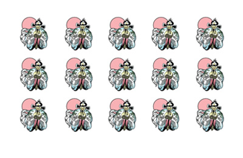

Haute f'Aurts
August 2012
Like Chicken Night In Turkey
Which Door Leads To The Safe?
When In Doubt, Get The Fuck Out
Good Junk
Chopin Shorter
April 2013
Revolutionary Footprints
Sonorous For Four
Some other random shit in 5/4

The Mystery Hour
April 2010
Magic, The Darkest Kind. My Soul Swims In It.
It's All In The Reflexes
We Really Shook The Pillars Of Hell, Didn't We?